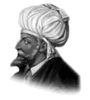

II. BEYAZIT
Annesi: Mükrime Hatun
Doğumu: 3 Aralık 1447
Vefatı: 26 Mayıs 1512
Saltanatı: 1481 - 1512 (31 yıl)
II. Beyazıt, uzun boylu, geniş göğüslü ve kuvvetli bir vücuda sahipti. Yüzü yuvarlak ve gözleri elâ idi. Cesur ve atılgandı. Aynı zamanda çok halim, selim ve dinine bağlı bir padişahtı. Babası Fatih Sultan Mehmet Han ilme karşı büyük bir sevgi beslediği için, oğlu Beyazıt’a her şeyden evvel kuvvetli bir tahsil vermeyi düşünmüştü.
O devrin en meşhur âlimlerinde ders okutturmuş, bütün İslâmi ilimleri en iyi şekilde öğretmişti. II. Beyazıt, dinine çok bağlı olduğu için kendisine (Beyazıt Veli) denildi. Beyazıt Veli, şairleri saraya toplar onlarla sohbet ederdi. Beyazıt Veli çok âlim bir zat idi. Arapça ve Farsçayı gayet iyi bilirdi. İslâmi ilimlerin yanı sıra matematik ve felsefe tahsili de yapmıştır. Çağatay lehçesi ve Uygur alfabesini de öğrenmişti. Hattat ve bestekârdı. “Avni” mahlasıyla şiirler yazardı. Ulema ve sanatkârlar için ayrıca bir para fonu ayırmıştı. Beyazıt Veli padişah olduktan sonra, kardeşi Cem Sultan ile on dört yıl mücadele etti. Kilye ve Akkerman’ı fethetti.
1484-1485’de Mısır Memlukleri ile savaştı. Devrinde Belgrad III. defa kuşatıldı ve tarihte ender görülen Abdina Zaferi elde edildi. Denizden İspanya’ya sefer açıldı. Endülüs Müslüman Devleti’nin yardımına gönderilen bu donanma kıyı şehirlerine baskınlar düzenledi. Karşısına çıkacak bir devlet olmadı. Osmanlı Devleti tarihinde, akıncıların Avrupa’nın içlerine kadar akınlar düzenlediği devir bu devirdir. Venedik’i dahi bu akıncılar istila edip, ta Varşova’ya kadar gittiler. 1483’de tarihin sayılı deniz savaşlarından olan Sapi-enza Deniz Zaferi kazanıldı. 1500’de İnebahtı fethedildi. Koron, Modon ve Navarin kaleleri alındı. Anadolu’da baş gösteren Şahkulu İsyanı bastırıldı. Oğullarının en kudretlisi olarak kabul ettiği Şehzade Selim’in ısrarlı hareketleri karşısında tahtından feragat etti. Dimetoka Sarayı’nda oturmak istedi ve bu maksatla yola çıktı. Çok rahatsızdı. Dimetoka’ya varamadan Havsa kasabasının Abalar köyünde vefat etti.
Cenazesi kendi yaptırdığı Beyazıt Camii türbesine defnedildi. Altmış iki yaşında idi. Vefatı duyulunca, en çok savaştığı Mısır’da bile cenaze namazı kılındı. Tahta çıktığında 2.214.000 km2 olan Osmanlı topraklarını 2.375.000 km2 oldu.
Erkek çocukları: Mahmut, Ahmet, Şehinşah, Yavuz Sultan Selim, Mehmet, Korkud, Abdullah, Alimşah.
Kız çocukları: Ayni Şah, Gevher Mülük, Hatice, Selçuk ve Hüma Hatun.